1 | import seaborn as sns |
1 | def sinplot(flip=1): |
1 | sinplot() |
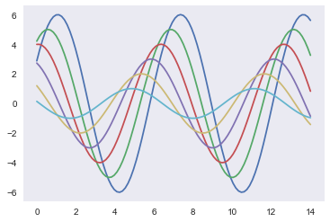
1 | sns.set() |
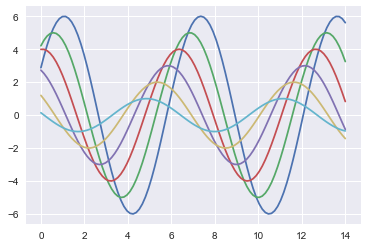
1 | sns.set_style("ticks") |
<matplotlib.axes._subplots.AxesSubplot at 0x1a1d097668>
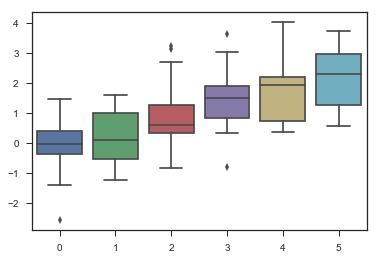
1 | sns.set_style("white") |
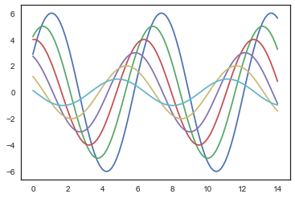
1 | sinplot() |
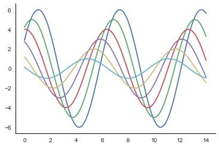
1 | sns.violinplot(data) |
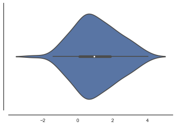
1 | with sns.axes_style("darkgrid"): |
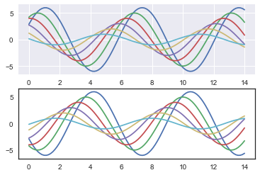
1 | sns.set() |
1 | sns.set_context("paper") |
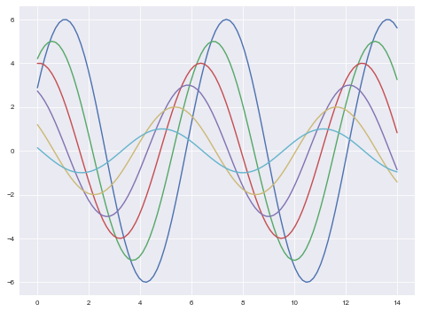
1 | sns.set_context("talk") |
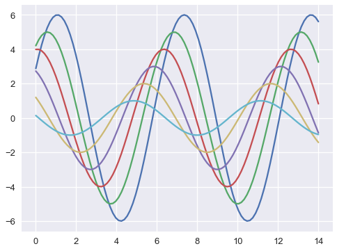
1 | sns.set_context("poster") |
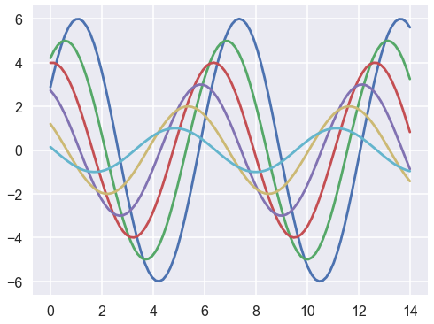
1 | sns.set_context("notebook",font_scale=2.5,rc={'lines.linewidth':4.5}) |
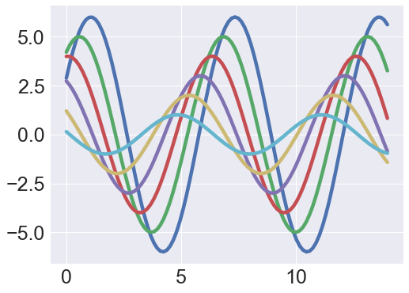